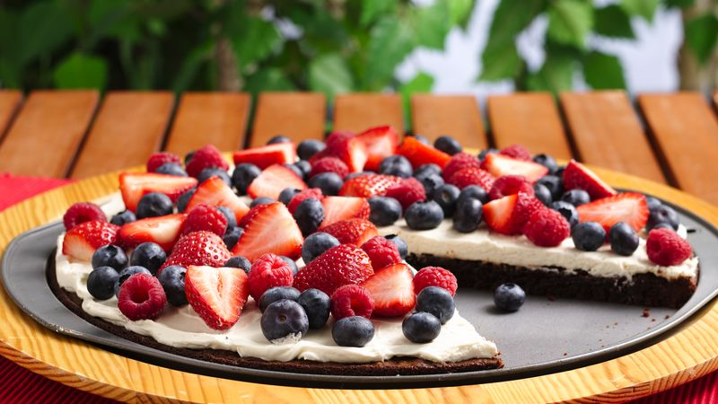

Thriple Berry Pizza

Ingredients
- 1 cup all-purpose flour
- 1/4 cup confectioners' sugar
- 1/2 cup cold butter. cubed
- 1/2 cup cold butter pecans
- 1 package (8 ounces) cream cheese
- softened 1 egg , 1/3 cup sugar
- 1-3/4 cups frozen mixed berries, thawed
- 1/2 cup sugar, 2 tablespoons cornstarch
- 1/4 cup water, 2-1/2 cups fresh strawberries, sliced 2 cups fresh blackberries
- 2 cups fresh raspberries , 1 cup fresh blueberries
Procedure
-
STEP 1
combine flour and confectioners sugar. Cut in butter until crumbly. Stir in pecans. Press into an ungreased 12-in. pizza pan. Bake at 350° for 12-14 minutes or until crust is set and edges are lightly browned. Meanwhile, in a bowl, beat cream cheese, egg and sugar until smooth. Spread over crust. Bake 8-10 minutes longer or until set. Cool to room temperature. For topping, process mixed berries and sugar in a blender or food processor until blended. In a saucepan, combine cornstarch and water until smooth. Add mixed berry mixture. Bring to a boil; cook and stir for 2 minutes or until thickened. Set mixture aside to cool, stirring frequently. Spread berry mixture over the cream cheese layer. Arrange fresh fruit on top. Refrigerate for at least 2 hours before slicing